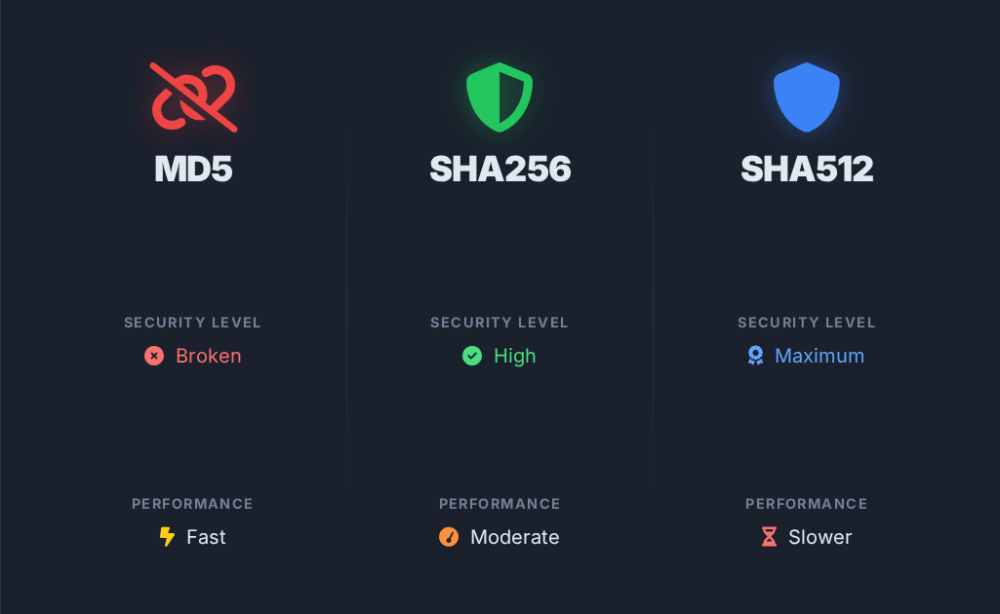

Choosing the right hash algorithm can make or break your application's security. With MD5 still appearing in legacy systems, SHA256 dominating modern applications, and SHA512 promising maximum security, developers face a critical decision that affects both security and performance.
This comprehensive comparison will help you understand when to use each algorithm, their security implications, and performance trade-offs in real-world scenarios.
The Fundamental Differences
Hash Length and Output
The most visible difference between these algorithms is their output length:
// MD5 - 128-bit hash (32 hex characters)
"5d41402abc4b2a76b9719d911017c592"
// SHA256 - 256-bit hash (64 hex characters)
"2cf24dba4f21d4288094c47b3e4b1a4dd4a8f1b8e5a3b9e4c7b2c6d8a1f2e3d4"
// SHA512 - 512-bit hash (128 hex characters)
"9b71d224bd62f3785d96d46ad3ea3d73319bfbc2890caadae2dff72519673ca72323c3d99ba5c11d7c7acc6e14b8c5da0c4663475c2e5c3adef46f73bcdec043"
Algorithm Families
- MD5: Part of the MD (Message-Digest) family, designed in 1991
- SHA256: Part of SHA-2 family, published by NIST in 2001
- SHA512: Also SHA-2 family, same publication but different internal structure
Security Analysis
MD5: The Broken Algorithm
MD5 is cryptographically broken and should not be used for security purposes. Here's why:
- Collision attacks: Two different inputs can produce the same hash
- Preimage attacks: Possible to find input that produces a specific hash
- Speed vulnerabilities: Too fast, making brute force attacks feasible
Despite these vulnerabilities, MD5 still has legitimate uses:
// Acceptable MD5 uses in 2025
const acceptableUses = {
fileChecksum: "Detecting accidental corruption (not tampering)",
cacheKeys: "Non-cryptographic hash table keys",
legacySupport: "Maintaining compatibility with old systems",
performanceTest: "Benchmarking hash performance baselines"
};
// NEVER use MD5 for these
const dangerousUses = {
passwords: "Easily cracked with rainbow tables",
digitalSignatures: "Vulnerable to collision attacks",
certificates: "All major browsers reject MD5 certificates",
apiAuthentication: "Trivial to forge"
};
SHA256: The Industry Standard
SHA256 represents the sweet spot for most applications:
- No known practical attacks
- Widely supported across all platforms and languages
- Approved by NIST and other standards bodies
- Used by Bitcoin and major cryptocurrencies
- Performance optimized in most modern CPUs
// Real-world SHA256 applications
const sha256Uses = {
blockchain: "Bitcoin, Ethereum proof-of-work",
certificates: "TLS/SSL certificate signatures",
passwords: "Secure password hashing (with salt)",
fileIntegrity: "Software distribution checksums",
apiKeys: "Secure API token generation",
digitalSignatures: "Document and code signing"
};
SHA512: Maximum Security
SHA512 offers the highest security level but comes with trade-offs:
- Larger hash size provides more entropy
- Better resistance to future quantum attacks
- Slower performance on 32-bit systems
- Higher storage requirements for hash values
Performance Benchmarks
Performance varies significantly based on hardware and implementation. Here's what you can expect:
Speed Comparison
// Approximate throughput (MB/s) on modern hardware
const performanceBaseline = {
md5: {
cpu: "~500-800 MB/s",
use_case: "Legacy file checksums",
efficiency: "Fastest, but insecure"
},
sha256: {
cpu: "~100-300 MB/s",
hardware_acceleration: "~1000+ MB/s (with AES-NI)",
use_case: "General cryptographic applications",
efficiency: "Good balance of speed and security"
},
sha512: {
cpu_32bit: "~80-150 MB/s (slower on 32-bit)",
cpu_64bit: "~120-400 MB/s (faster on 64-bit)",
use_case: "High-security applications",
efficiency: "Slower but maximum security"
}
};
When Performance Matters
Consider these scenarios when choosing based on performance:
- High-frequency operations: Session token generation, API rate limiting
- Large file processing: Software distribution, backup verification
- Embedded systems: IoT devices with limited CPU resources
- Real-time applications: Gaming, live streaming authentication
Practical Decision Guide
Choose MD5 When:
- You need the fastest possible hashing for non-security purposes
- Working with legacy systems that require MD5 compatibility
- Creating simple file checksums for corruption detection
- Generating cache keys or hash table indices
// Safe MD5 usage example
function generateCacheKey(data) {
// Safe: Using MD5 for non-cryptographic cache key
return crypto.createHash('md5')
.update(JSON.stringify(data))
.digest('hex');
}
// Detect file corruption (not tampering)
function quickFileChecksum(buffer) {
return crypto.createHash('md5')
.update(buffer)
.digest('hex');
}
Choose SHA256 When:
- Building secure applications (recommended default)
- Implementing password hashing systems
- Creating digital signatures or certificates
- Working with blockchain or cryptocurrency
- Need balance between security and performance
// SHA256 for secure applications
function secureHash(data, salt = '') {
return crypto.createHash('sha256')
.update(data + salt)
.digest('hex');
}
// File integrity verification
function verifyFileIntegrity(buffer, expectedHash) {
const actualHash = crypto.createHash('sha256')
.update(buffer)
.digest('hex');
return actualHash === expectedHash;
}
Choose SHA512 When:
- Maximum security is required
- Working with highly sensitive data
- Future-proofing against quantum computing
- Regulatory compliance requires strongest hashing
- 64-bit systems where performance is acceptable
// SHA512 for maximum security
function highSecurityHash(data, salt) {
return crypto.createHash('sha512')
.update(data + salt)
.digest('hex');
}
// Secure key derivation
function deriveKey(password, salt, iterations = 100000) {
return crypto.pbkdf2Sync(password, salt, iterations, 64, 'sha512');
}
Implementation Best Practices
Always Use Salt for Passwords
// WRONG: Hashing passwords without salt
const badHash = crypto.createHash('sha256')
.update(password)
.digest('hex');
// RIGHT: Using salt and proper key derivation
const salt = crypto.randomBytes(32);
const goodHash = crypto.pbkdf2Sync(password, salt, 100000, 64, 'sha256');
Consider Hardware Acceleration
// Check for hardware acceleration support
function getBestHashAlgorithm() {
const crypto = require('crypto');
// Check if AES-NI is available (improves SHA256 performance)
if (crypto.constants && crypto.constants.OPENSSL_VERSION_NUMBER) {
return 'sha256'; // Hardware accelerated on most modern CPUs
}
// Fallback based on CPU architecture
const arch = process.arch;
if (arch === 'x64') {
return 'sha256'; // Good performance on 64-bit
} else {
return 'md5'; // Only if security isn't critical
}
}
Validate Hash Lengths
function validateHashFormat(hash, expectedAlgorithm) {
const lengths = {
md5: 32,
sha256: 64,
sha512: 128
};
const expectedLength = lengths[expectedAlgorithm];
if (hash.length !== expectedLength) {
throw new Error(`Invalid ${expectedAlgorithm} hash length`);
}
if (!/^[a-f0-9]+$/i.test(hash)) {
throw new Error('Hash contains invalid characters');
}
return true;
}
Migration Strategies
Moving Away from MD5
If you're currently using MD5 for security purposes, here's a safe migration path:
function migrateFromMD5(userData, plaintextPassword) {
// Step 1: Verify existing MD5 hash
const oldHash = crypto.createHash('md5')
.update(plaintextPassword)
.digest('hex');
if (oldHash !== userData.password_hash) {
throw new Error('Invalid credentials');
}
// Step 2: Generate new SHA256 hash with salt
const salt = crypto.randomBytes(32);
const newHash = crypto.pbkdf2Sync(
plaintextPassword,
salt,
100000,
64,
'sha256'
);
// Step 3: Update database
return {
password_hash: newHash.toString('hex'),
salt: salt.toString('hex'),
algorithm: 'pbkdf2-sha256',
iterations: 100000
};
}
Real-World Applications
Web Development
// Express.js middleware for file upload integrity
function verifyUploadIntegrity(algorithm = 'sha256') {
return (req, res, next) => {
const expectedHash = req.headers['x-file-hash'];
if (!expectedHash) {
return res.status(400).json({ error: 'Hash header required' });
}
const actualHash = crypto.createHash(algorithm)
.update(req.file.buffer)
.digest('hex');
if (actualHash !== expectedHash) {
return res.status(400).json({ error: 'File integrity check failed' });
}
next();
};
}
Database Operations
// Efficient duplicate detection using different hash algorithms
class DuplicateDetector {
constructor() {
this.fastHashes = new Set(); // MD5 for quick filtering
this.secureHashes = new Set(); // SHA256 for final verification
}
isDuplicate(data) {
// Step 1: Quick MD5 check (fast elimination)
const fastHash = crypto.createHash('md5')
.update(data)
.digest('hex');
if (!this.fastHashes.has(fastHash)) {
this.fastHashes.add(fastHash);
return false; // Definitely not a duplicate
}
// Step 2: SHA256 verification (handle MD5 collisions)
const secureHash = crypto.createHash('sha256')
.update(data)
.digest('hex');
if (this.secureHashes.has(secureHash)) {
return true; // Confirmed duplicate
}
this.secureHashes.add(secureHash);
return false;
}
}
Testing and Validation
Always test your hash implementations with known values:
// Test vectors for validation
const testVectors = {
input: "The quick brown fox jumps over the lazy dog",
expected: {
md5: "9e107d9d372bb6826bd81d3542a419d6",
sha256: "d7a8fbb307d7809469ca9abcb0082e4f8d5651e46d3cdb762d02d0bf37c9e592",
sha512: "07e547d9586f6a73f73fbac0435ed76951218fb7d0c8d788a309d785436bbb642e93a252a954f23912547d1e8a3b5ed6e1bfd7097821233fa0538f3db854fee6"
}
};
function validateImplementation() {
['md5', 'sha256', 'sha512'].forEach(algorithm => {
const hash = crypto.createHash(algorithm)
.update(testVectors.input)
.digest('hex');
console.assert(
hash === testVectors.expected[algorithm],
`${algorithm} implementation failed validation`
);
});
console.log('All hash implementations validated successfully');
}
The Bottom Line
Your choice of hash algorithm should align with your specific requirements:
- For security applications: Use SHA256 as your default choice
- For maximum security: Choose SHA512 when protection is paramount
- For legacy compatibility: MD5 only for non-cryptographic purposes
- For performance-critical applications: Benchmark all options with your specific data
Remember that security requirements evolve over time. What's secure today may not be secure tomorrow. Plan for migration paths and regularly review your cryptographic choices.
Most importantly: when in doubt, choose SHA256. It provides strong security, good performance, and wide compatibility across all modern systems.
Building fast, secure tools is all about making informed trade-offs. That's the philosophy behind ToolShelf—giving developers the utilities they need with privacy-first, offline-capable tools that keep your data secure.
Try our Hash Generator to test MD5, SHA256, and SHA512 with your own data—completely offline and private.
Stay safe & happy coding,
— ToolShelf Team